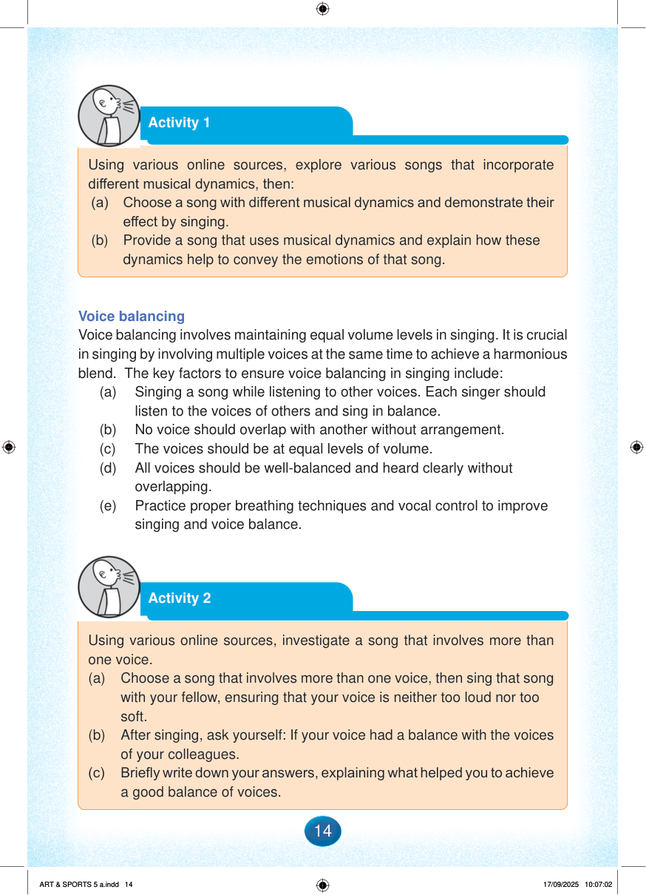

Activity 1
Using various online sources, explore various songs that incorporate different musical dynamics, then:
(a)
Choose a song with different musical dynamics and demonstrate their effect by singing.
(b)
Provide a song that uses musical dynamics and explain how these dynamics help to convey the emotions of that song.
Voice balancing
Voice balancing involves maintaining equal volume levels in singing.
It is crucial in singing by involving multiple voices at the same time to achieve a harmonious blend.
The key factors to ensure voice balancing in singing include:
(a)
Singing a song while listening to other voices.
Each singer should listen to the voices of others and sing in balance.
(b)
No voice should overlap with another without arrangement.
(c)
The voices should be at equal levels of volume.
(d)
All voices should be well-balanced and heard clearly without overlapping.
(e)
Practice proper breathing techniques and vocal control to improve singing and voice balance.
Activity 2
Using various online sources, investigate a song that involves more than one voice.
(a)
Choose a song that involves more than one voice, then sing that song with your fellow, ensuring that your voice is neither too loud nor too soft.
(b)
After singing, ask yourself: If your voice had a balance with the voices of your colleagues.
(c)
Briefly write down your answers, explaining what helped you to achieve a good balance of voices.